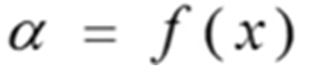
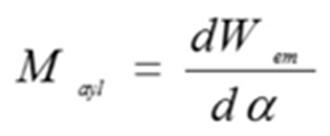
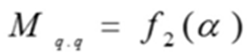
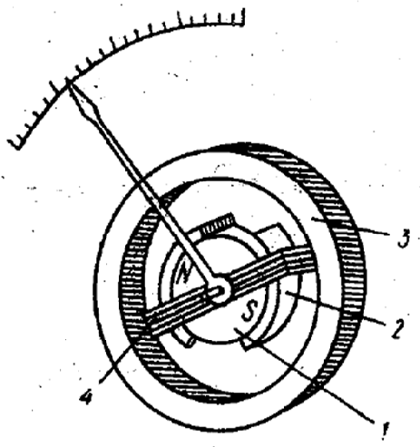
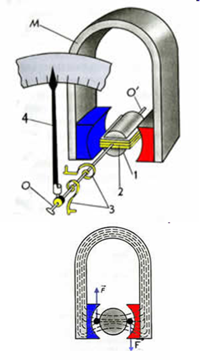
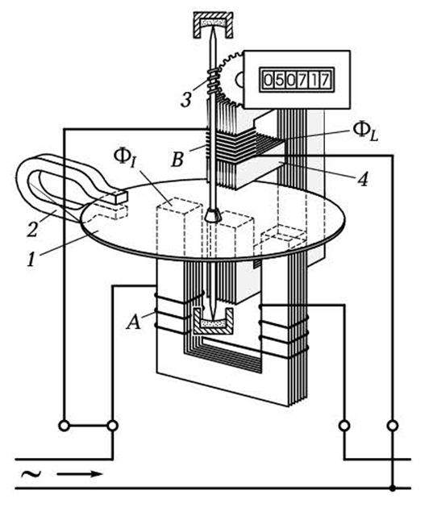
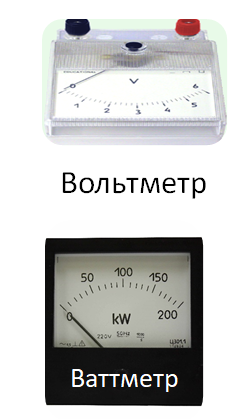

Электр ўлчаш асбоблари. Электр ўлчашлар
Режа:
1. Асосий тушунчалар.
2. Умумий техник талаблар.
3. Бевосита баҳолайдиган электр ўлчаш асбобларнинг таснифи.
4. Электр ўлчаш асбобларининг механизмлари.
БАРЧА ЭЛЕКТР ЎЛЧОВ АСБОБЛАРИ ИККИ ТУРГА БЎЛИНАДИ:
АНАЛОГЛИ ёки ЭЛЕКТРОМЕХАНИК ЭЛЕКТР ЎЛЧОВ АСБОБЛАРИ
РАҚАМЛИ ЭЛЕКТР ЎЛЧОВ АСБОБЛАРИ
Кўрсатиши ўлчанаётган миқдорнинг ўзгаришига узлуксиз боғлиқ бўлган ўлчаш асбоби аналогли ёки
электромеханик электр ўлчаш асбоби деб аталади.
Ўлчаш маълумотлари автоматик ҳолда дискрет сигналларни ҳосил қиладиган ва кўрсатиши рақам шаклида
ифодаланадиган асбоблар рақамли электр ўлчаш асбоблари дейилади.
Ўлчаш маълумотларининг олиниш усулига қараб ўлчаш асбоблари қуйидагиларга бўлинади:
Ўлчаш натижаларини шкала бўйича акс эттирувчи – кўрсатувчи қурилмалар.
Ўлчаш натижасини тасма, қоғоз ва ҳоказоларда акс эттирувчи-қайд қилувчи қурилмалар.
ЭЛЕКТР ЎЛЧАШ АСБОБЛАРИГА ҚУЙИДАГИ ТЕХНИК ТАЛАБЛАР ҚЎЙИЛАДИ:
Ўлчаш асбобининг аниқлиги.
Ишлаш шароитга қараб электр ўлчов қурилмасини туркумланиши.
Асбобнинг ўзи истеъмол қиладиган қувват.
Асбобнинг тез ишлай олиши.
Изоляция мустаҳкамлиги.
Ўлчаш асбобининг аниқлиги – унинг хатолиги нолга қанчалик яқинлигини бидирувчи кўрсаткичдир.
Стрелкали ўлчаш асбобларининг аниқлиги келтирилган хатолик билан баҳоланади
Нормал шароитларда аниқланадиган келтирилган хатолик қурилманинг келтирилган хатолиги деб аталади.
Электр ўлчов қурилмалари Давлат стандарти бўйича 8 та аниқлик синифига ажратилади:
0,05; 0,1; 0,2; 0,5; 1,0; 1,5; 2,5 ва 4.
Бу аниқлик синфлари қурилманинг шкаласида келтирилган бўлади.
Ишлаш шароитга қараб электр ўлчов қурилмасини қуйидаги туркумларга бўлса бўлади:
А туркум (ҳарорат оралиғи +10÷+35 гача, муҳитнинг нисбий намлиги 80% гача);
Б туркум (ҳарорат оралиғи -30÷+40 гача, муҳитнинг нисбий намлиги 90% гача);
B1 туркум (ҳарорат оралиғи -40÷+50 гача, муҳитнинг нисбий намлиги 95% гача);
B2 туркум (ҳарорат оралиғи -50÷+60 гача, муҳитнинг нисбий намлиги 95% гача);
B3 туркум (ҳарорат оралиғи -50÷+80 гача, муҳитнинг нисбий намлиги 98% гача);
Асбобнинг ўзи истеъмол қиладиган қувват – электр энергиянинг сарфланиши билан боғлиқдир. Бу жараёнда
асбобнинг электр занжири қизийди. Асбобнинг қувват исрофи ва унинг параметрлари шундай бўлиши керакки,
асбоб уланганда ўлчаш бажарилаётган занжирнинг иш режими ўзгармаслиги керак.
Асбобнинг тез ишлай олиши – ўлчанаётган миқдорлар ўзгарганда қурилманинг қўзғалувчан қисми бир
мувозанат
ҳолатидан иккинчи мувозанат ҳолатига ўтади.
Стрелканинг шкала узунлиги бўйича 1% дан ошмагандаги тебраниш амплитудаси учун кетган вақт оралиғи
тинчланиш вақти деб аталади.
Барча ўлчаш қурилмалари демпферлар яъни тинчлантиргичлар билан таъминланади. Тинчлантириш вақти 4-6
секунддан ошмаслиги керак.
Изоляция мустаҳкамлиги – ўлчаш қурилмалари ва ёрдамчи қисмларнинг изоляцияси етарлича мустаҳкамликка
эга бўлиши керак. Изоляция Давлат стандартига мувофиқ, агар мос равишда тармоқ кучланиши 40 В дан 2 кВ
гача бўлганда бир минут давомида 2 дан 5 кВ гача кучланишга бардош бериши керак.
Ўлчаш занжири – қурилманинг бир неча қисмидан иборат бўлиб, ўлчанаётган катталик Х ни ўлчаш
механизимига
бевосита таъсир этувчи электр катталик У га ўзгартириш учун хизмат қилади.
Ўлчаш механизми – қурилманинг асосий қисмидан бири бўлиб, унда электр ёки магнит энергия
қўзғалувчан
қисмни силжитувчи механик энергияга ўзгартирилади. Аксарият ўлчаш механизмларида қўзғалувчан қисмнинг
сижиши маълум ўқ атрофида α бурчакка бурилишидан иборат бўлади.
Қайд этиш қурилмаси – қурилма конструкциясининг бир қисми бўлиб, кўрсаткич ва шкаладан тузилгандир.
У қўзғалувчан қисмнинг бурчак силжишини кўрсаткич силжишига ўзгартириб беради.
Аналогли ёки электромеханик қурилмаларнинг умумий қисмларига:
корпус;
қўзғалувчан ва қўзғалмас қисмлар;
тескари таъсир этувчи момент ҳосил қилувчи қурилма;
тинчлантиргич;
қайд қилувчи қурилма ва ҳоказолар киради.
Тинчлантиргич қурилма занжирига уланганда ёки ўлчанаётган катталикнинг қиймати ўзгарганда
қўзғалувчан
қисмни тезроқ тинчлантириш учун ҳизмат қилади.
Тинчлантиргичлар бир неча турларга бўлинади.
Масалан:
Ҳаволи қанотли;
Ҳаво поршенли;
Магнитоиндуционли ва ҳоказо

Қурилманинг ўлчаш механизми унинг кириш қисмига берилаётган электр энергиясини унинг қўзғалувчан қисми
сижиши учун зарур бўлган механик энергияга айлантирувчи ўзгартиргичдир

Ўлчаш қурилмасида ўлчанаётган катталик таъсирида юзага келадиган ва қўзғалувчан қисмини маълум бурчакка
бурадиган момент айлантирувчи момент деб аталади.
Бу момент умумий ҳолда ўлчанаётган катталик Х ва қўзғалувчан қисм бурилиш бурчаги α нинг фунцияси
бўлиб
ўлчаш механизмида тўпланган электромагнит энергиянинг α бурчак бўйича ўзгариши билан тавсифланади.
Электромеханик ўлчаш қурилмаларида айлантирувчи моментнинг умумий ифодасини магнит ёки электр
майдон
энергиясининг геометрик координата, яъни кўпчилик қурилмаларда қўзғалувчан қисмнинг бурилиш бурчаги
бўйича ҳосиласи сифатида ифода этиш мумкин:

Айлантирувчи момент М таъсири остида қурилманинг қўзғалувчан қисми қарама-қарши момент билан
тенглашгунча бурилади. Тескари момент айлантирувчи моментга қарама-қарши йўналган ва у бурилиш бурчаги
ортиши билан у ҳам ортади.

Айлантирувчи моментни ҳосил қилиш усулига кўра электромеханик қурилмалар қуйидагиларга бўлинади:
Магнитоэлектрик;
Электромагнит;
Электродинамик;
Ферродинамик ёки магнитодинамик;
Индукцион.


Магнитоэлектрик қурилмалар ўлчаш аниқлиги юқори бўлган қурилмалар туркумига киради.
Улар 0,1 аниқлик синфигача ясалиши мумкин.
Магнитоэлектрик қурилмаларнинг афзалликларидан бири уларнинг юқори сезгирлигидир.
Бундай қурилмаларнинг қувват истеъмоли ҳам жуда кам, юқори ўлчаш чегараси 5 Ампер бўлган амперметр
0,3 Vt га яқин қувват истеъмол қилади.
Юқоридаги қайд этилган афзалликларига кўра магнитоэлектрик қурилмалар тўғрилагич схемалар билан
бирга ўзгарувчан ток занжирларида ҳам ишлатилади.
Магнитоэлектрик ўлчов қурилмаларининг камчиликларига қуйидагилар киради:
конструктив тузилишининг нисбатан мураккаблиги;
баҳосининг қимматлиги;
ўта юкланишга чидамсизлиги;
қўшимча ўзгартиргичларсиз ўзгарувчан ток занжирида қўллаб бўлмайди.
Электромагнит қурилмаларнинг афзалликлари:
ўзгармас ва ўзгарувчан ток занжирларида ишлатилади;
ўта юкламага бардошли;
конструкциясининг соддалиги;
ишлашда ишончлилиги;
катта ток ва юқори кучланишларни бевосита ўлчай олиши;
нархининг нисбатан арзонлиги.
Электромагнит қурилмаларнинг камчилиги:
Шкаланинг нотекислиги;
Ток частотаси ва ҳарорат ўзгариши;
Ташқи майдон таъсирига сезувчанлиги;
Қувват истеъмолининг катталиги;
Сезгирлигининг нисбатан пастлиги.
Индукцион механизмли курилмаларда айлантирувчи момент кузгалмас контурлар хосил килган узгарувчан
магнит
окимлари ва курилманинг кузгалувчан кисмида шу окимлар индуктивлаган уюрма токларнинг узаро таъсири
натижасида вужудга келади. Бундай асбобларнинг ишлаш принципидан куринадики улар факат узгарувчан ток
занжирларида кулланилиши мумкин. Хозирги вактда индукцион улчаш механизмлари факат электр энергияси
счётчикларида кулланилади

Логометр-шундай қурилмаки унда момент Мпр механик пружиналар ёрдамида эмас, балки ўзаро параллел
симлардан ўтаётган электр токининг таъсири натижасида вужудга келтирилади.
Электр ўлчов қурилмалари — бир неча электр катталикларини қийматларини ўлчаш учун
қўлланилади.
